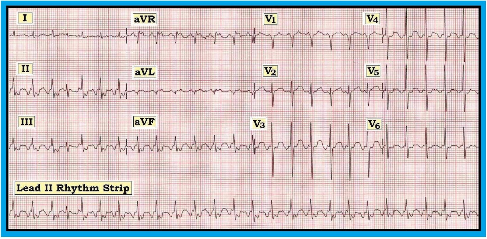
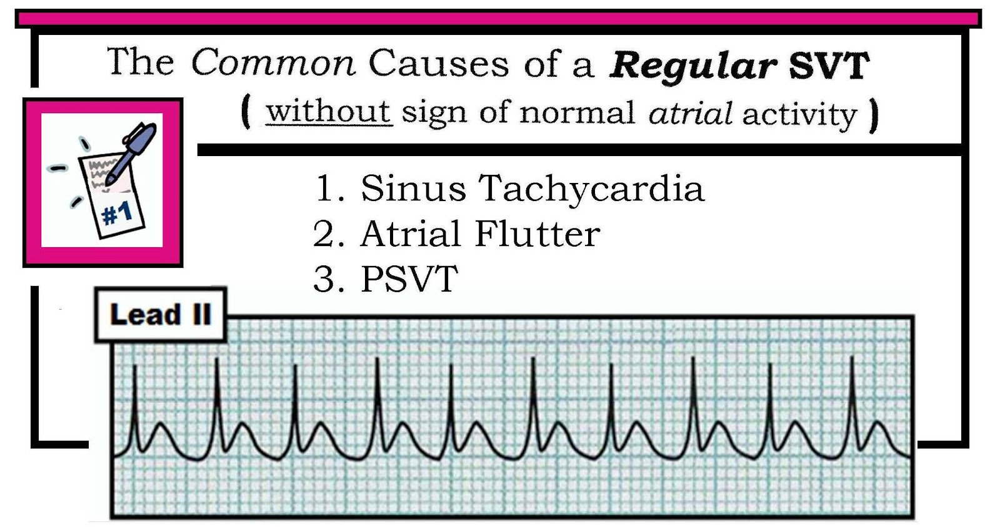
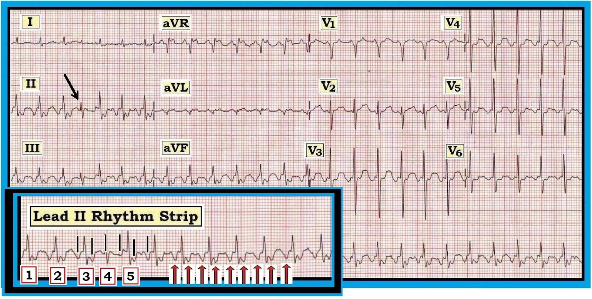

ECG Blog #40 — SVT đều: Danh sách #1
Điện tâm đồ 12 chuyển đạo và dải nhịp chuyển đạo II ở Hình 1 được ghi từ một bệnh nhân nhập viện vì đợt cấp COPD (bệnh phổi tắc nghẽn mạn tính). Bệnh nhân ổn định về huyết động. Bản ghi của bệnh nhân được đọc là có nhiễu đường nền (điều dễ hiểu với mức độ khó thở của bệnh nhân) – và nhịp nhanh xoang. Bạn có đồng ý không?


DIỄN GIẢI: Sự hiện diện của nhiễu đường nền thường làm việc đọc điện tâm đồ khó khăn hơn. Dù vậy – nhiễu là hiện tượng thường gặp, và một bản ghi chất lượng tối ưu đôi khi là mục tiêu khó đạt được ở một bệnh nhân đang bệnh cấp tính. Mức độ nhiễu ở Hình 1 không quá nhiều, và không nên cản trở việc chẩn đoán rối loạn nhịp này.
- Nhịp chung là nhanh và đều. Khoảng R-R gần như đúng bằng 2 ô lớn – xác định tần số vào khoảng ~150 lần/phút.
- Phức bộ QRS hẹp (không quá nửa ô lớn).
- Khi nhìn qua lần đầu – chúng ta không chắc chắn về sự hiện diện và bản chất của sóng P. Không thấy sóng P dương rõ ràng ở chuyển đạo II. Dù vậy – dường như có ít nhất một dạng hoạt động nhĩ nào đó trên dải nhịp chuyển đạo II ở cuối bản ghi.
---------------------------------------------------------------
NHẬN ĐỊNH BAN ĐẦU: Chúng ta đã mô tả một SVT (SupraVentricular Tachycardia – nhịp nhanh trên thất) đều với tần số ~150 lần/phút – nhưng không có sóng P bình thường. Quá trình tư duy của chúng tôi để tìm nguyên nhân của loạn nhịp nhanh này như sau:
- Nhận ra nhịp là một SVT đều không có hoạt động nhĩ bình thường phải lập tức gợi ngay đến chẩn đoán phân biệt gồm 3 thực thể thường gặp: i) Nhịp nhanh xoang; ii) Cuồng nhĩ; và iii) PSVT (Bảng 1). “Cái hay” của danh sách này – là nó tập trung sự chú ý của người làm cấp cứu vào 3 nguyên nhân chính chiếm đại đa số các trường hợp.
- LƯU Ý: AFib (Atrial Fibrillation – rung nhĩ) không nằm trong DANH SÁCH SVT đều ở Bảng 1 – vì AFib không đều. Chúng tôi cũng chọn không đưa Nhịp nhanh nhĩ dẫn truyền AV 2:1 vào DANH SÁCH này, vì theo kinh nghiệm của chúng tôi ATach ít gặp hơn nhiều so với 3 thực thể kia — và, với dẫn truyền 2:1 ở tần số thất ≥140 lần/phút, điều này đòi hỏi tần số nhĩ ~280 lần/phút — nhanh hơn đáng kể so với thường thấy ở ATach.


---------------------------------------------------------------
CHẨN ĐOÁN PHÂN BIỆT: Phân biệt giữa 3 thực thể liệt kê ở Bảng 1 không phải lúc nào cũng dễ. Một số manh mối (kể cả các nghiệm pháp chẩn đoán) có thể giúp ích. “Tin tốt” – là chẩn đoán nhịp xác định thường không cần thiết trước khi bắt đầu điều trị:
- NẾU tần số của SVT đều nhanh hơn (tức là trên 170 lần/phút) – chẩn đoán gần như chắc chắn là PSVT. Đây không phải trường hợp ở Hình 1 – nghĩa là phải cân nhắc cả 3 thực thể trong DANH SÁCH.
- Theo thống kê – nhịp SVT hay bị bỏ sót nhất là AFlutter (Atrial Flutter – cuồng nhĩ). Đó là vì hoạt động cuồng nhĩ có thể kín đáo, và không phải lúc nào cũng thấy được ở cả 12 chuyển đạo. Cho đến nay – đáp ứng thất thường gặp nhất trong AFlutter là dẫn truyền AV 2:1 (tần số nhĩ ~300 lần/phút; tần số thất ~150 lần/phút). Vì vậy – luôn luôn “Nghĩ đến cuồng nhĩ cho đến khi chứng minh được điều ngược lại” bất cứ khi nào bạn gặp một SVT đều với tần số gần 150 lần/phút. Đây chính là trường hợp của nhịp ở Hình 1.
- Nhịp nhanh xoang có nằm trong chẩn đoán phân biệt. Phần lớn thời gian nhịp này dễ nhận ra nhờ có sóng P dương, rõ ràng đi trước mỗi phức bộ QRS ở chuyển đạo II. Lý do chúng tôi đưa nhịp nhanh xoang vào Danh sách SVT đều ở Bảng 1 – là ở tần số nhanh hơn, sóng P đôi khi có thể bị che lấp trong đoạn ST đi trước. Điều này có vẻ không xảy ra ở Hình 1 – trong đó, nếu có, thì là một sóng chủ yếu âm đi trước mỗi phức bộ QRS ở chuyển đạo II. Như vậy, trên thực tế – chẩn đoán phân biệt của chúng tôi cho nhịp ở Hình 1 đã được thu hẹp còn 2 thực thể: AFlutter và PSVT. Thống kê và tần số thất khiến chúng tôi nghi ngờ mạnh khả năng thứ nhất.
---------------------------------------------------------------
Các MANH MỐI bổ sung: Khi quan sát kỹ – nhịp ở Hình 1 không hoàn toàn đều. Thay vào đó – nhát thứ 4 đến sớm (mũi tên đen lớn ở Hình 2).
- ĐIỂM THEN CHỐT (PEARL) lâm sàng: Một manh mối cực kỳ quan trọng thường lộ ra ngay trong “khoảng ngắt” của bất kỳ rối loạn nhịp nào. Một thay đổi thoáng qua của nhịp (dù cực kỳ kín đáo, như sau nhát thứ 4 ở Hình 2) – đôi khi có thể giúp hiểu được cơ chế nền của rối loạn nhịp vốn không rõ lúc đầu. Đây là trường hợp ở Hình 2 – nơi dù nhát #4 đến sớm trên dải nhịp chuyển đạo II, các sóng cuồng nhĩ nền vẫn tiếp tục không suy giảm (như thấy qua các vạch đen thẳng đứng ngắn trên phần phóng to dải nhịp chuyển đạo II).
- Dùng compa đo (calipers) có lẽ là cách tiết kiệm thời gian nhất để kiểm tra nghi ngờ rằng một SVT đều là cuồng nhĩ. Chỉ cần đặt khoảng cách hai mũi compa đúng bằng khoảng của hoạt động nghi là cuồng nhĩ. Các mũi tên đỏ nhỏ thẳng đứng trên phần phóng to dải nhịp chuyển đạo II ở Hình 2 cho thấy làm như vậy cho kết quả “bước đều” hoàn hảo với tần số ~300 lần/phút. Khoảng cách mũi compa này đúng bằng một nửa khoảng R-R của tất cả các nhát trên bản ghi xuất hiện sau khoảng ngắt thoáng qua, sớm và ngắn của nhịp.
- Việc xác nhận rằng những gì ta thấy thực sự là hoạt động cuồng nhĩ có thể có được nhờ phát hiện sóng cuồng nhĩ ở các chuyển đạo khác. Bên cạnh các chuyển đạo dưới (II,III,aVF) – chuyển đạo V1 và chuyển đạo aVR là những vị trí thường dễ bộc lộ các sóng dương gợi ý cuồng nhĩ. Điều này đặc biệt đúng với chuyển đạo aVR ở Hình 2 – nơi có đều đặn 2 đỉnh dương nhỏ trong mỗi khoảng R-R. Dù cũng thấy 2 đỉnh dương nhỏ ở chuyển đạo V1 của Hình 2 – việc đỉnh cuồng nhĩ thứ 2 chồng lên phần đầu của QRS ở chuyển đạo này làm dấu hiệu kín đáo hơn nhiều.


---------------------------------------------------------------
Sử dụng nghiệm pháp cường phế vị: Xác nhận cuối cùng rằng nhịp ở Hình 1 là AFlutter dẫn truyền AV 2:1 có được nhờ dùng một nghiệm pháp cường phế vị. Như đã bàn chi tiết trong Mục 13.0 (pdf trích từ ACLS-2013-ePub) – có thể thực hiện bằng xoa xoang cảnh, nghiệm pháp Valsalva, hoặc “Valsalva hoá học” bằng cách dùng adenosine để chẩn đoán/điều trị.
- Mũi tên đen lớn ở Hình 3 cho thấy tác dụng có thể có của một nghiệm pháp cường phế vị đối với nhịp ở Hình 2. Lưu ý đáp ứng thất chậm lại thoáng qua từ dẫn truyền AV 2:1 xuống 4:1, làm bộc lộ rõ hoạt động cuồng nhĩ nền với tần số ~300 lần/phút (các vạch đỏ thẳng đứng nhỏ ở Hình 2). Các lựa chọn điều trị được trình bày trong các tệp pdf ở phần Tài liệu tham khảo bên dưới.

-----------------------------------------------------------------------
- -
Xin xem các Mục PDF liên quan sau đây, trích từ ACLS-2013-ePub:
- Mục 06.0 — về Sử dụng Adenosine -
- Mục 13.0 — về SVT chưa rõ nguyên nhân -
- Mục 14.0 — về Xử trí các nhịp SVT cơ bản -
-----------------------------------------------------------------------